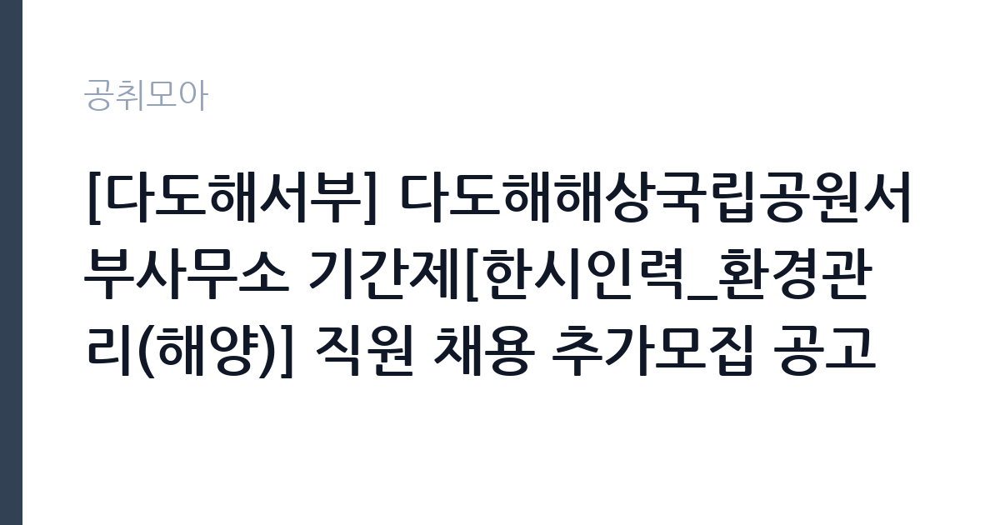

[공공기관] [다도해서부] 다도해해상국립공원서부사무소 기간제[한시인력_환경관리(해양)] 직원 채용 추가모집 공고
국립공원공단 다도해해상국립공원서부사무소 · 전남 · 마감 2026-11-02 (D-5) · 출처 나라일터

한눈에 보는 모집 조건
| 기관 | 국립공원공단 다도해해상국립공원서부사무소 |
|---|---|
| 공고명 | [다도해서부] 다도해해상국립공원서부사무소 기간제[한시인력_환경관리(해양)] 직원 채용 추가모집 공고 |
| 고용형태 | 일용직 |
| 근무지 | 전남 |
| 게시일 | 2026-10-28 |
| 마감일 | 2026-11-02 (D-5) |
지원자격, 이렇게 읽으세요
- 기간제[한시인력_환경관리(해양)] 2명
- 접수 ~2026-11-02 마감
- 세부 조건은 원문 공고문 확인
일용·단기 근로는 정해진 사업 기간이나 단기 업무를 위해 채용되는 형태입니다. 근무 일수와 일당이 정해지고 사업 종료 시 근로관계가 끝납니다. 계절 사업이나 행사 지원, 단기 대체 인력으로 활용되는 경우가 대표적입니다. 이번 공고는 국립공원공단 다도해해상국립공원서부사무소에서 직접 진행하는 자체 전형으로, 응시자격과 제출서류는 공고문에 항목별로 제시됩니다. 환경관리 직무는 학력과 경력을 크게 보지 않는 대신 건강 상태와 근무 지속 가능성을 확인합니다. 장비를 들고 계단과 화장실을 오가야 하므로 허리와 무릎 상태가 실질적인 조건입니다. 관련 경력자나 지역 거주자를 우대하는 조항이 붙기도 합니다. 국가공무원법상 결격사유 조회가 공통으로 적용됩니다. 서류는 접수 마감 이후 보완이 되지 않으므로 자격 요건과 증빙 서류를 마감 전에 모두 갖춰야 합니다. 공고문에 명시된 우대 사항은 해당 여부를 확인해 증빙을 첨부해야 가점이 반영됩니다. 공고문의 응시자격 표를 보면 자격 항목이 여러 줄로 나뉘어 있으므로, 각 줄을 하나씩 체크하며 본인 해당 여부를 표시해 두면 누락을 줄일 수 있습니다.
이 공고의 포인트
이 공고의 첫 번째 포인트는 고용 형태입니다. 사업 기간에 맞춰 채용되므로 근무 일수와 보수가 비교적 명확합니다. 대신 다음 근무지를 별도로 구해야 합니다. 두 번째는 업무 범위가 명확하다는 점입니다. 환경관리 직무로 채용되므로 배치 이후 담당 업무가 크게 흔들리지 않습니다. 세 번째는 근무지입니다. 전남 지역 근무로 수도권 공고에 비해 지원자 분포가 넓지 않아 상대적으로 경쟁이 분산되는 경우가 있습니다. 직무 특성이 분명해 본인의 경험과 맞는지 빠르게 판단할 수 있습니다. 같은 직무 공고 중에서는 접수 마감이 가장 빨라 일정을 앞당겨 잡아야 합니다. 다만 선발 인원이 2명으로 많지 않아 자격을 갖춘 지원자가 몰리면 경쟁률이 높아질 수 있습니다.
전형은 어떻게 진행되나
1차 서류, 2차 면접의 2단계로 진행되는 구성이 일반적입니다. 서류에서는 자격 요건과 경력 증빙을 확인하고, 면접에서는 실제 업무 수행 능력과 조직 적응을 봅니다. 직무에 따라 필기시험이나 실기, 컴퓨터 활용 시험이 추가되기도 하므로 공고문의 전형표를 먼저 확인하십시오. 단계별로 합격자만 다음 전형에 응시할 수 있고, 단계마다 응시 자격 확인 서류를 다시 제출해야 하는 경우가 있습니다. 최종합격자 발표 후에는 신원조회와 채용 신체검사가 남아 있습니다. 제출서류 원본은 최종 단계에서 다시 요구되는 경우가 있어 사본과 함께 보관하십시오.
원문에서 확인한 전형 방식
다도해해상국립공원서부사무소 공고 제2026-28호 다도해해상국립공원서부사무소 기간제[한시인력_환경관리(해양)] 직원 채용 추가모집 공고 국립공원공단 다도해해상국립공원서부사무소에서 함께 근무할 기간제(한시인력)직원을 채용하고자 아래와 같이 추가모집 공고합니다. 1. 채용분야: 기간제[한시인력_환경관리(해양)] 직원 채용 추가모집 2. 채용인원: 2명(진도분소_진도 1명, 조도 1명) 3. 전형일정 가. 공고 및 접수: 2026. 10. 28.(수) ~ 2026. 11. 2.(월) 나. 최종합격자 발표(예정): 2026. 11. 4.(수) 다. 근로계약체결: 2026. 11. 1.(일) 4. 접수방법 ㅇ 방문 및 우편접수 (마감일 18:00 전 도착분에 한함) (58746) 전남광주통합특별시 목포시 통일대로 102-1 국립공원공단 다도해해상국립공원서부사무소 행정과 인사담당자 자세한 사항은 첨부파일을 참조하시기 바라며, 채용에 관한 자세한 문의는 다도해해상국립공원서부사무소(061-284-9113)로 문의하시기 바랍니다. 국립공원공단 다도해해상국립공원서부사무소장
이런 분께 추천해요
- 장기간 성실하게 근무할 수 있는 분
- 신체 활동에 무리가 없는 분
- 위생 관리 절차를 지킬 수 있는 분
지원 전 체크리스트
- 응시자격 요건과 경력 기준을 충족하는가 — 경력은 증명서로 입증해야 합니다
- 근무 기간과 일당·월급 지급 방식을 확인했는가
- 제출서류 목록을 모두 준비했는가 — 누락 시 서류 단계에서 탈락합니다
- 접수 마감 2026-11-02 이전에 접수 방식을 확인해 제출했는가
모집 일정과 제출 타이밍
2026-10-28에 공고가 올라왔고 접수는 2026-11-02까지입니다. 남은 기간은 5일이며, 이 기간에 자격증 사본과 경력증명서, 주민등록등본 같은 기본 서류를 모두 준비해야 합니다. 경력증명서는 발급에 며칠이 걸리는 경우가 있으니 가장 먼저 신청하십시오. 접수는 온라인과 우편·방문으로 나뉘는 경우가 많고, 우편 접수는 도착 기준으로 판정되므로 마감일 소인만 믿으면 안 됩니다. 면접 일정은 서류 발표 후 개별 통보되므로 제출 후에도 연락을 받을 수 있도록 유지해야 합니다. 공휴일이 끼어 있으면 증명서 발급이 늦어질 수 있으니 발급 일정을 앞당기십시오. 전남 근무지는 도서·산간 지역이 포함될 수 있어 근무지 세부 주소를 반드시 확인하십시오. 마감까지 일주일 안팎이 남아 서류 준비와 증빙 발급을 병행해야 합니다. 선발 인원이 한두 명 수준이라 지원자 개개인의 서류 완성도가 그대로 평가에 반영됩니다.
직무 이해하기: 공공기관
국립공원공단은 전국 국립공원을 관리하는 공공기관입니다. 각 사무소는 탐방로와 야영장, 안내 시설을 운영하고 자연 자원 보전과 이용객 안전을 담당합니다. 성수기와 단풍철에는 탐방객이 크게 늘어 현장 인력을 추가로 채용합니다. 환경관리 업무는 시설의 청결과 위생, 폐기물 처리를 담당합니다. 건물 내부와 외부 구역을 순찰하며 청소 상태를 점검하고, 폐기물 분리 배출과 수거 일정을 관리합니다. 소독과 방역 작업을 진행하고 사용한 약품과 장비를 기록합니다. 행사나 이사 같은 특수 상황에서는 추가 작업이 발생합니다. 공무직 환경관리사는 단순 청소를 넘어 위생 관리 기준을 지키고 작업 일지를 남기는 역할까지 맡습니다. 업무는 혼자 처리하기보다 부서 단위로 나눠 진행되므로 담당 구역과 협업 범위를 입사 초에 확인하는 것이 중요합니다. 직무 교육은 입사 후 기관 자체 계획에 따라 진행되므로 사전 경험이 없어도 시작할 수 있습니다.
자기소개서 작성 팁
지원서는 구체적인 생활 경험이 효과적입니다. 이전 근무지에서 위생 관리를 맡았던 경험, 장비를 다뤄본 경험을 적으십시오. 장기 근무 의사와 출퇴근 가능성을 분명히 쓰고, 체력 관리 방법을 한 줄 덧붙이면 신뢰를 줍니다. 구성은 지원 동기, 직무 경험, 기여 방안 순서가 무난합니다. 지원 동기는 국립공원공단 다도해해상국립공원서부사무소의 사업 중 본인이 관심을 가진 부분을 한 가지로 좁혀 서술하고 추상적인 표현은 줄이십시오. 직무 경험은 담당했던 업무와 규모, 결과를 수치로 제시하면 설득력이 올라갑니다. 기여 방안은 입사 후 첫 3개월과 1년 계획으로 나눠 쓰면 준비도가 드러납니다.
면접 준비 포인트
면접에서는 성실성과 근무 지속 의사를 확인합니다. 힘든 작업을 오래 할 수 있는지, 위생 관리 기준을 어떻게 지켜왔는지 묻습니다. 함께 일하는 사람과 역할을 나누는 방식도 평가 요소입니다. 출퇴근 시간을 지킬 수 있는지가 실질적인 판단 기준이 됩니다. 답변은 상황, 판단, 조치의 순서로 정리하면 전달이 분명해집니다. 모르는 질문에는 모른다고 밝히고 확인 방법을 제시하는 편이 억지 답변보다 낫습니다. 마지막에는 근무 의사와 함께 2026-11-02 이후 일정에 언제든 응할 수 있다는 점을 전달하십시오. 답변 시간이 짧게 정해져 있는 경우가 있으므로 핵심 문장을 먼저 말하고 근거를 붙이는 방식이 유리합니다.
급여·근무조건 읽는 법
알리오(공공기관 경영정보 공개시스템) 2025년 결산 경영공시 기준으로 국립공원공단 다도해해상국립공원서부사무소 일반정규직 1인당 평균보수액은 6,218만원, 공시된 신입사원 초임은 3,781만원입니다. 무기계약직 1인당 평균보수액은 3,620만원으로 공시되어 정규직과 차이가 납니다. 평균보수액은 기본급에 고정수당·실적수당·성과상여금·급여성 복리후생비를 모두 합산한 값이라 월 기본급만 보고 판단하면 실제와 크게 어긋납니다. 이번 공고는 단기·일용 채용이라 위 정규직 평균보수는 적용되지 않습니다. 근무 일수와 일당 기준으로 산정되므로 공고문 처우 항목을 확인해야 합니다. 공무직 환경관리 보수는 기관 임금표의 기본급에 정액급식비·명절휴가비 등이 더해지는 구조입니다. 무기계약 신분이면 정년까지 근무가 가능하고 매년 임금이 조정됩니다. 2026년 적용 최저임금은 시급 10,320원, 월 환산 2,156,880원(주 40시간·209시간 기준)입니다. 고용노동부 고시 제2025-47호로 확정된 금액입니다. 공고문에 금액이 제시되지 않은 항목은 원문 보수표나 처우 설명에서 확인해야 하며 확인되지 않은 수치는 쓰지 않는 것이 원칙입니다. 비교할 때는 월 급여뿐 아니라 상여·명절휴가비·복지포인트·초과근무수당까지 포함한 연간 총액으로 계산하십시오. 기간제라면 계약 기간 동안의 총액을, 무기계약이라면 호봉 상승과 정년까지의 누적 소득을 기준으로 판단하는 편이 정확합니다.
자주 묻는 질문
- 선발 인원은 몇 명인가요?
공고문 기준 2명입니다. 직종별로 인원이 나뉘는 경우가 있으니 모집분야 항목을 함께 확인하십시오. - 근무지는 어디인가요?
전남 지역의 국립공원공단 다도해해상국립공원서부사무소 소속 근무지입니다. 세부 주소와 출퇴근 조건은 원문 공고문에서 확인할 수 있습니다. - 보수는 얼마인가요?
채용 신분(일용·단기)과 기관 임금 규정에 따라 정해지며 구체적인 금액은 공고문 처우 항목에 제시됩니다. 금액이 공개되지 않은 경우에는 원문의 보수표를 확인하십시오.
함께 보면 좋은 공고
[공공기관] 2026년 제2차 국외소재문화유산재단 직원 채용(6급, 임시계약직 사업A/사업B) — 마감 2026-11-09[공공기관] 한국농어촌공사 금강사업단(보훈/장애제한경쟁) 공무직(청소원) 채용 — 마감 2026-11-13[공공기관] 분당서울대학교병원 진료교수요원(핵의학과) 채용공고 — 마감 2026-11-09출처: 나라일터 공개정보를 바탕으로 공취모아가 정리한 안내글입니다. 모집 조건·일정은 변경될 수 있으니 지원 전 반드시 원문 공고문을 확인하세요. 본 글은 정보 제공용이며 합격을 보장하지 않습니다.